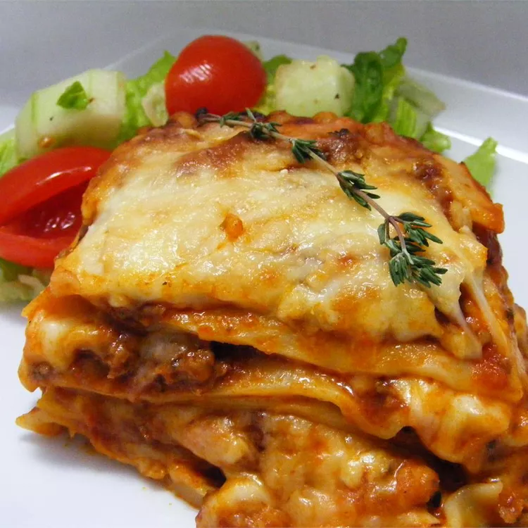

This basic meat lasagna with provolone, mozzarella, ricotta, and Parmesan is very easy to make.
Preheat the oven to 375 degrees F (190 degrees C).
Make the sauce: Heat oil in a large saucepan over medium-high heat. Add onion
and garlic; cook and stir until translucent, about 5 minutes. Add ground beef
and garlic powder; cook and stir until browned and crumbly, 5 to 7 minutes.
Drain and discard grease. Add spaghetti sauce, tomato sauce, and oregano;
cover and simmer for 15 to 20 minutes.
Make the lasagna: Mix mozzarella and provolone together in a medium bowl.
Mix ricotta, milk, eggs, and oregano together in another bowl.
Ladle sauce (just enough to cover) into the bottom of a 9x13-inch baking dish.
Layer sauce with three lasagna noodles, more sauce, ricotta mixture, and
mozzarella mixture; repeat once more using all of remaining cheese mixtures.
Layer with remaining three lasagna noodles and remaining sauce, then sprinkle
Parmesan over top.
Cover and bake in the preheated oven for 30 minutes. Uncover and continue to
bake until cheese is melted and top is golden, about 15 minutes longer.